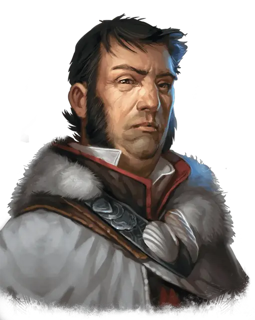

Заключённый 237
Prisoner 237
Средний Гуманоид (Человек), законно-злой, именной НИП

Класс Доспеха 11
Хиты 32 (5к8 + 10)
Скорость 30 футов (10 фт. в кандалах)
| мод | спас | ||
|---|---|---|---|
| СИЛ | 9 | −1 | −1 |
| ЛОВ | 13 | +1 | +1 |
| ТЕЛ | 14 | +2 | +2 |
| мод | спас | ||
|---|---|---|---|
| ИНТ | 17 | +3 | +3 |
| МДР | 10 | +0 | +0 |
| ХАР | 15 | +2 | +2 |
Навыки Магия +5, Обман +4, Убеждение +4
Чувства пассивное Восприятие 10
Языки Общий, Драконий, Инфернальный, Орочий
Опасность 1 (200 опыта)
Бонус мастерства +2
Особенности
Использование заклинаний. Заключённый 237 является заклинателем 5-го уровня. Его способность к заклинаниям основана на Интеллекте (Сл спасброска от заклинаний 13; +5 к атакам заклинаниями). У него подготовлены следующие заклинания волшебника:
• Заговоры (неограниченно): свет [light], сообщение [message], фокусы [prestidigitation], электрошок [shocking grasp] (см "Действия" ниже);
• 1 уровень (4 ячейки): доспехи мага [mage armor]*, щит [shield], усыпление [sleep];
• 2 уровень (3 ячейки): волшебный замок [arcane lock], обнаружение мыслей [detect thoughts], внушение [suggestion]*;
• 3 уровень (2 ячейки): контрзаклинание [counterspell], молния [lightning bolt]*.
*Заключённый 237 нуждается в материальных компонентах для произнесения этих заклинаний.
Действия
Электрошок (заговор). Рукопашная атака заклинанием: +5 к попаданию (с преимуществом, если цель облачена в доспехи из металла), досягаемость 5 фт., одно существо. Попадание: 9 (2к8) урона электричеством и цель не может использовать реакции до начала следующего хода.
Описание
Заключенный под номером 237 в тюремных камерах Конца Веселья - Вейлиш Гант, член Тайного Братства, который внедрившись в торговую сеть Десяти Городов осуществлял её саботаж в надежде, что таким образом поможет Тайному Братству в получении контроля над регионом. Несколько лет назад, после своего появления в Десяти Городах, Гант организовал в Брин Шандере преступный рэкет, обещая коммерсантам защиту и пытаясь настроить горожан против своего Спикера, Дувессы Шейн, с целью её смещения с занимаемой должности. Тем самым он пытался дестабилизировать экономику Десяти Городов, но группа авантюристов сорвала его преступные планы, разоблачив и пленив Вейлиша.
Вместо того, чтобы казнить Вейлиша за содеянные им преступления в Долине Ледяного Ветра, Совет Спикеров Десяти Городов договорился с представителями Альянса Лордов о его пожизненном заключении в тюрьме Конец Веселья для того, чтобы не навлечь на регион гнев Тайного Братства. Совет Спикеров сделал это, не догадываясь о том, что планы Ганта не были санкционированы Тайным Братством, и он действовал сам по себе, намереваясь произвести, если всё пройдёт так как им было задумано, впечатление на остальных руководителей Братства.
В течение долгого времени Гант надеялся, что Тайное Братство окажет давление на Альянс Лордов добиваясь его освобождения, и что Альянс согласится с требованиями Братства, опасаясь, что отказ приведет к атаке на тюрьму. Но к текущему моменту времени Гант находится в заключении уже столько времени, что пришёл к вполне обоснованному заключению, что освобождения не предвидится. Его провалившийся план дестабилизации региона опозорил Тайное Братство, и они явно предпочли забыть о нём навсегда.